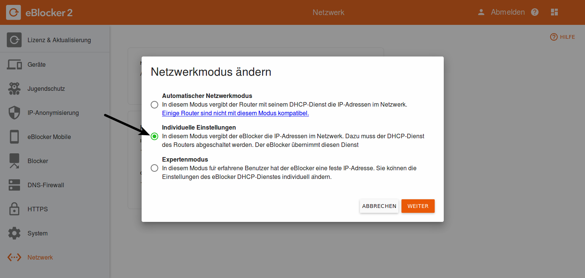
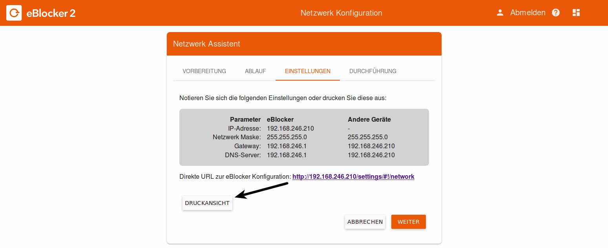
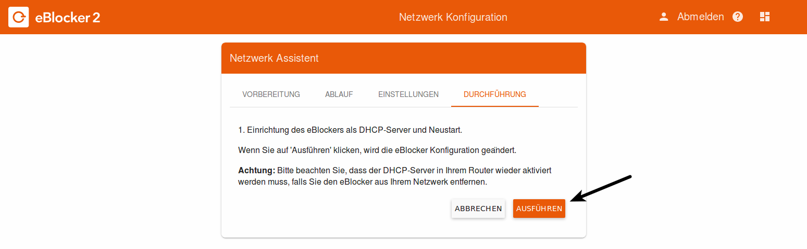

Deutsch | English
Sie haben den eBlocker angeschlossen und seitdem gibt es Probleme in Ihrem Netzwerk?
Das kann daran liegen, dass Sie einen Router verwenden, der nicht mit der Plug & Play-Funktion des eBlocker, kompatibel ist.
Sie müssen dennoch nicht auf den Schutz durch den eBlocker verzichten und können mit nur vier einfachen Schritten den eBlocker in Betrieb nehmen.
Schritt 1 – Die Vorbereitung: Einloggen auf dem Router
Benutzten Sie bitte einen Rechner, welcher mit einem LAN Kabel an Ihrem Router angeschlossen ist!
Öffnen Sie einen Browser und loggen Sie sich auf Ihrem Router ein. Eine Anleitung dazu finden Sie in der Regel auf der Website Ihres Routerherstellers.
z.B. FRITZ!Box: http://fritz.box – Alle Anleitungen finden Sie hier.
z.B. Speedport: http://speedport.ip oder http://192.168.2.1 – Alle Anleitungen finden Sie hier.
z.B. Technicolor TC7200: http://192.168.0.1 – Eine Anleitung von finden Sie hier.
Gehen Sie in die Einstellungen Ihres Routers und öffnen Sie die Liste der angeschlossenen Geräte (DHCP-Clients).
z.B. FRITZ!Box: „Heimnetz“ > „Heimnetzübersicht“ > „Alle Geräte“
z.B. Speedport: „Grundeinstellungen“ > „Heimnetzwerk (LAN)“ > „Übersicht der Geräte im Heimnetzwerk“ > (MAC+IP) „anzeigen“
z.B. Technicolor TC7200: „Heimnetzwerk“ > „DHCP Client-Geräte“
Dort finden Sie einen Eintrag namens „eBlocker“. Notieren Sie sich diese IP-Adresse.
Öffnen Sie ein weiteres Browserfenster und lassen sie das vom Bestehende geöffnet.
Geben Sie die IP-Adresse des eBlocker in die Adresszeile des neuen Browserfensters ein und bestätigen mit der „Enter“-Taste.
Schritt 2 – Den eBlocker umstellen
Wechseln Sie in die eBlocker-Einstellungen in das Menü „Netzwerk“, drücken auf den "Bearbeiten" Button und es startet der Netzwerk-Assistent. Wählen Sie als Netzwerkmodus "Individuelle Einstellungen" aus.

Bevor Sie starten lesen Sie bitte die bitte die Abschnitte „Vorbereitung“ und „Ablauf“ gut durch. Den Abschnitt „Einstellungen“ drucken Sie sich am besten aus oder notieren sich die Angaben.

Jetzt müssen Sie nur noch im letzten Abschnitt „Durchführung“ die drei Kästchen bestätigen und auf den Button „Ausführen“ klicken.

Der eBlocker konfiguriert sich selbst und startet anschließend neu. Dies kann mehrere Minuten dauern.
Nach dem Neustart wird der eBlocker bemerken, dass es noch einen weiteren DHCP-Server in Ihrem Netzwerk gibt und warten, bis Sie diesen deaktiviert haben.
Schritt 3 – Den DHCP Server am Router ausstellen
Jetzt wechseln Sie bitte zurück zu dem ersten Browserfenster mit Ihren Router Einstellungen. Gehen Sie zu den „DHCP-Server“-Einstellungen Ihres Routers und deaktivieren sie dort den DHCP-Server
z.B. FRITZ!Box: „Heimnetz“ > „Heimnetzübersicht“ (Ansicht: Erweitert) > „Netzwerkeinstellungen“ > „IPv4 Adressen“ > Haken entfernen bei „DHCP-Server aktiveren“
z.B. Speedport: „Heimnetzwerk“ > „Heimnetzwerk (LAN)“ > „DHCP“ > „DHCP aus“
z.B. Technicolor TC7200: „Grundeinstellungen“ > „Lokales Netzwerk (LAN)“ > „DHCP-Server aktivieren“ > „DHCP deaktivieren“
Wo diese bei Ihrem Router zu finden sind, wird im Handbuch Ihres Router Herstellers erläutert. Nachdem Sie den DHCP-Server Ihres Routers deaktiviert haben, speichern/übernehmen Sie die Einstellungen zum Schluss. Eventuell startet Ihr Router anschließend neu.
Schritt 4 – Sämtliche Netzwerkgeräte neu starten
Damit alle Netzwerkgeräte die neuen Einstellungen übernehmen, trennen Sie alle Computer, Tablets und sonstigen Geräte von Ihrem Heimnetz und verbinden Sie diese anschließend neu. Sollten einzelne Geräte die Einstellungen nicht übernommen haben, starten Sie die betreffenden Geräte neu.
Wichtig! Wenn Sie diese Einstellungen rückgängig machen wollen, müssen Sie erst an Ihrem Router den DHCP-Server wieder aktivieren und anschließend den DHCP-Server des eBlockers deaktivieren, bzw. die Netzwerkeinstellung des eBlockers auf „Automatisch“ setzen.
Beachten Sie bitte auch unsere FAQ‘s.